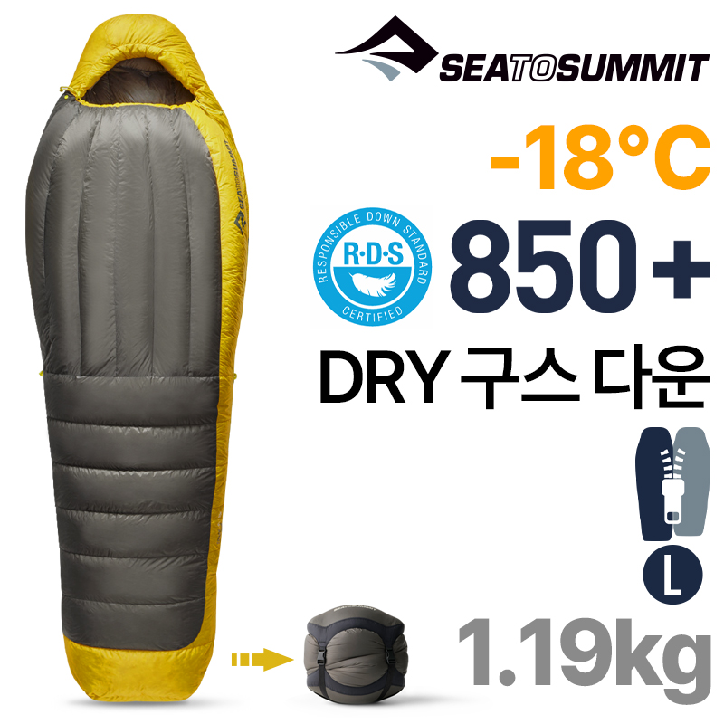
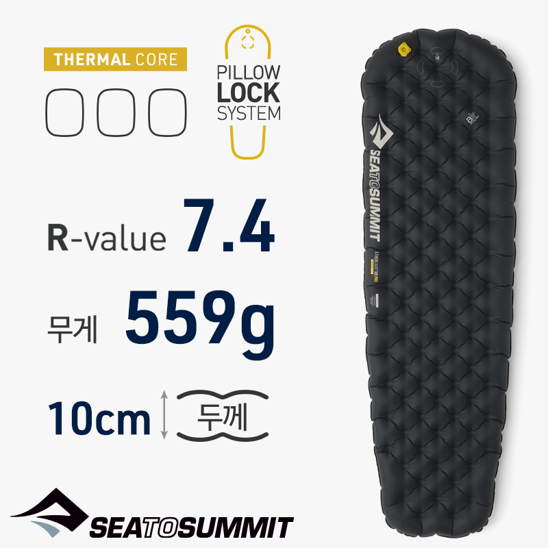

후원 제안서 · SPONSORSHIP PROPOSAL
일시종주(무하산) · 백패킹 · 2027년 1~2월
산바다
지리산 천왕봉 → 진부령 · 약 740km
프로젝트 개요
백두대간은 지리산 천왕봉부터 진부령까지 이어지는 한반도의 산줄기입니다. 일시종주(무하산)는 출발부터 완주까지 하산하거나 일상으로 복귀하지 않고 산 위에서 먹고 자며 이어가는 방식이며, 이번 도전은 포터나 차량 지원 없이 모든 장비와 식량을 직접 짊어지는 무지원 백패킹으로 진행합니다.
740km
총 종주 거리 (약)
25~30일
예상 소요기간
1~2월
한국 최한기 도전
무하산
일시종주 방식
이 도전을 선택한 이유
최근 러닝이 트렌드가 되면서 등산도 속도와 기록 경쟁 중심의 트레일러닝으로 빠르게 대체되고 있습니다. 그 흐름 속에서 산에서 스스로 살아남는 알피니즘의 본질을 잊지 않기 위해, 일시종주와 무지원 백패킹을 선택했습니다. 이 도전이 많은 분들에게 작은 경종이 되기를 바랍니다.
지금의 흐름
기록 단축과 완주 시간 경쟁에 집중하는 트레일러닝이 산행 문화의 중심으로 빠르게 자리 잡고 있습니다.
우리가 지키려는 것
장비를 스스로 짊어지고, 날씨와 싸우며, 산 위에서 먹고 자며 살아남는 것. 일시종주와 무지원 백패킹은 그 본질을 다시 묻는 질문입니다.
도전의 의의
혹한기 산행은 일반 시즌보다 훨씬 무거운 방한 장비와 여유 식량, 예비 연료가 필요합니다. 장비 파손이나 컨디션 저하에 대응할 여력까지 확보해야 하기에 준비 비용이 크게 늘어납니다. 이 도전을 브랜드와 함께 만들어가고, 그 과정을 진솔한 콘텐츠로 기록해 공유하고자 합니다.
애드포스트로 운영 중, 산행 일지를 일 단위로 기록합니다.
산행 중 실시간 스토리, 완주 후 하이라이트·릴스 콘텐츠를 제작합니다.
노출 형태 — 브랜드 태그, 제품 실사용 후기, 사진·영상 콘텐츠를 기본으로 하며, 완주 후 종합 후기(블로그 장문 후기 + 인스타그램 영상)로 후원 제품의 실사용 경험을 집중 조명합니다.
| 후원 형태 | 제공 혜택 |
|---|---|
| 제품 협찬 | 산행 중 실사용 콘텐츠, 완주 후 상세 후기(블로그+인스타그램), 브랜드 태그 및 로고 노출 |
| 현금 후원 | 협찬과 동일한 노출 + 메인 스폰서 표기(블로그 상단, 인스타그램 하이라이트 커버) |
| 복합 후원 | 제품·현금 동시 후원 시 우선 협의를 통해 노출 비중 확대 |
후원 규모와 형태에 따라 노출 순서 및 콘텐츠 비중을 유동적으로 조정하며, 세부 내용은 개별 협의를 통해 확정합니다.
동계용 텐트, 그라운드시트
극한기 침낭, 단열 매트
다운재킷, 이너웨어, 고어텍스, 장갑
동계 등산화, 아이젠, 스패츠
동계용 버너, 여분 연료, 코펠
동결건조식, 행동식, 비상식량
헤드랜턴, 보조배터리, 스틱, 통신장비
장비 파손, 이동 경비, 비상 대응
세부 수량과 예산은 후원사와의 협의를 거쳐 확정합니다.
특별 협찬 요청 · SEA TO SUMMIT
하산 없이 이어가는 이번 종주는 매일 밤 영하의 능선 위에서 잠듭니다. 다음 날을 걸을 힘은 침낭과 매트가 지켜주는 체온에서 나옵니다.
스파크 -18도 침낭은 적정 -18℃ / 쾌적 -10℃ 등급으로, 한겨울 능선의 밤을 견딜 여유를 줍니다.
850+ 필파워 구스다운으로 무게와 부피를 줄여, 모든 짐을 직접 지는 무지원 종주에 맞습니다.
방수 처리된 울트라 드라이 다운이 텐트 안 결로와 습기 속에서도 보온력을 지켜줍니다.
에테르 라이트 XR 프로 인슐레이티드 매트가 언 땅에서 올라오는 냉기를 막습니다.
(주)니오 협찬 요청


스파크 -18도 레귤러 850필파워 구스다운 침낭 1개
에테르 라이트 XR 프로 인슐레이티드 레귤러 에어 매트리스 1개
사용 기간: 2027년 1월 초 ~ 2월 중 (약 25~30일, 종주 전 구간)
25~30일 혹한기 실사용 일지를 블로그에 일 단위로 기록
완주 후 침낭·매트 상세 후기 (블로그 + 인스타그램 영상)
산행 중 및 완주 후 콘텐츠 전반에 브랜드 태그·로고 노출
제품 사이즈, 협찬 조건 등 세부 사항은 (주)니오와 개별 협의를 통해 확정합니다.
01
출발 (기상 상황에 따라 조정 가능)
02
총 예상 소요기간
03
완주 예정
04
종합 후기 콘텐츠 발행
연락처 및 맺음말
@_san_bada_
BLOG
네이버 블로그 '산바다'
partspace.design@gmail.com
도전자 소개
백패킹을 중심으로 캠핑, 프리다이빙, 클라이밍 등 아웃도어 전반을 즐깁니다.
아웃도어 커뮤니티 소속으로 정기적인 산행과 모임 활동을 이어가고 있습니다.
2024년 크리스마스 백패킹 행사를 독자 기획, 참가자 12명 선발과 브랜드 10곳 이상의 후원을 유치했습니다.
인스타그램(_san_bada_)과 네이버 블로그를 매일 운영합니다.